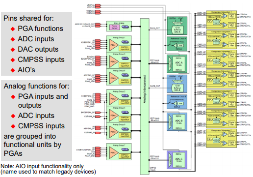

Analog System Interconnect#
The Analog Subsystem Interconnect permits a single pin to route a signal to multiple analog modules. Thus, enabling a very flexible pin usage, allowing for smaller device packages.
Note:
The F28x7x and F2838x devices do not have an analog subsystem interconnect.
Example - F28004x Analog Subsystem Interconnect#
The DAC outputs, comparator subsystem inputs, PGA functions, and digital inputs are multiplexed with the ADC inputs.

The connections for each of the portions within the analog subsystem interconnect can be found within the ‘Analog Subsystem’ section of the device’s Technical Reference Manual (TRM).
Feedback
Please provide any feedback you may have about the content within C2000 Academy to: c2000_academy_feedback@list.ti.com